St Columba's island
Columba landed here in 563, and pilgrims have come ever since. The Abbey and the Nunnery are a short walk from the hotel, and our garden lies beside the Nunnery, on the old Road of the Dead to the Abbey.
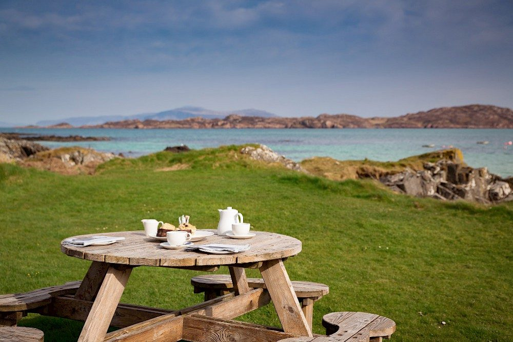
A small, owner-run hotel on the village street, looking over the Sound of Iona. Food from our own organic garden, two lounges with an open fire and a piano, and an island people have travelled to for 1,500 years.
Iona is three and a half miles long and a mile and a half wide, with about 170 people living here all year. Visitors leave their cars on Mull and cross on foot. It is a place to slow down, recover and come home to yourself.
Columba landed here in 563, and pilgrims have come ever since. The Abbey and the Nunnery are a short walk from the hotel, and our garden lies beside the Nunnery, on the old Road of the Dead to the Abbey.
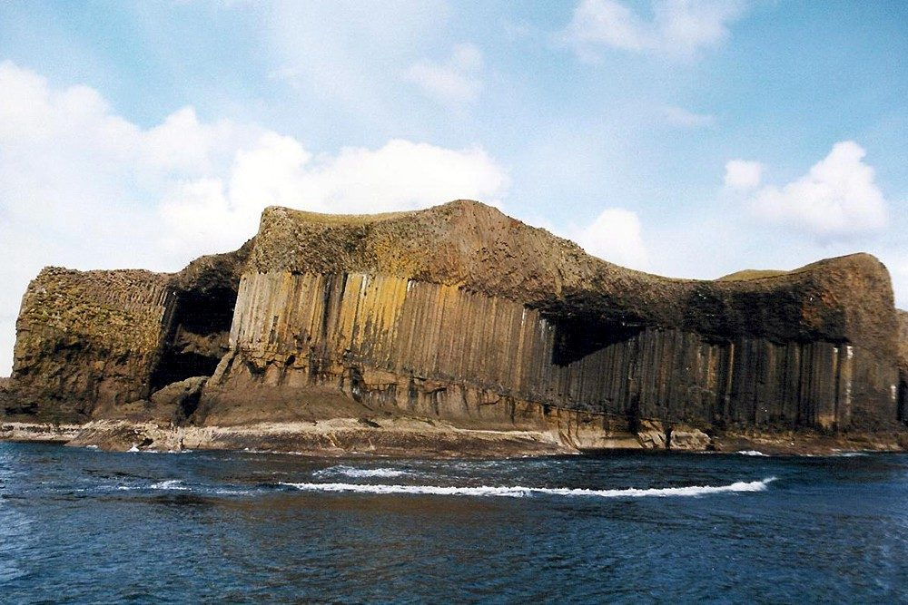
Boats leave twice a day in good weather for Staffa and Fingal's Cave, which inspired Mendelssohn's Hebrides Overture. From May to late July the puffins nest there and on Lunga.
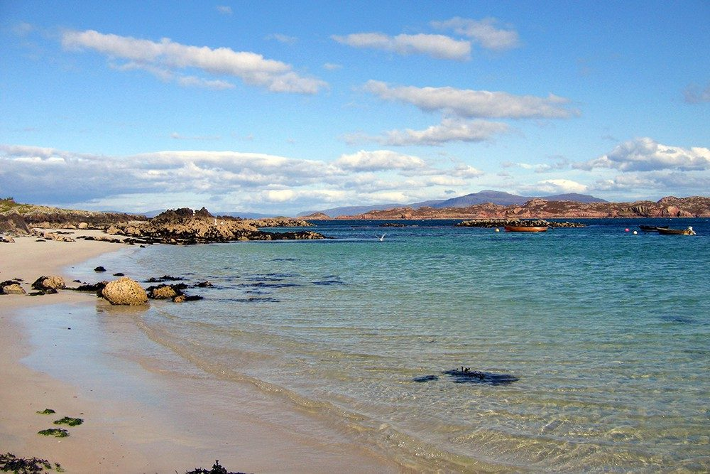
Every beach has its own colours, from grey and red to green, white and pink. Wordsworth, Keats, Scott, Stevenson and the Scottish Colourists all came here, and the island still inspires artists today.
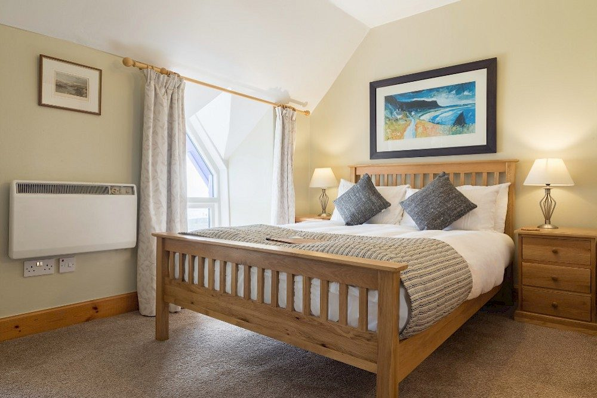
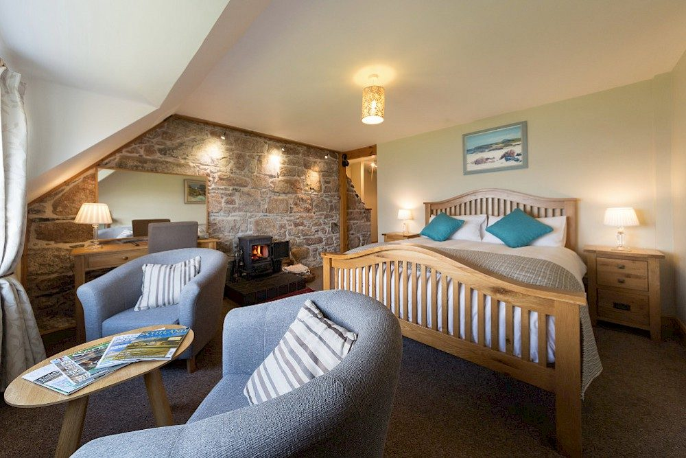
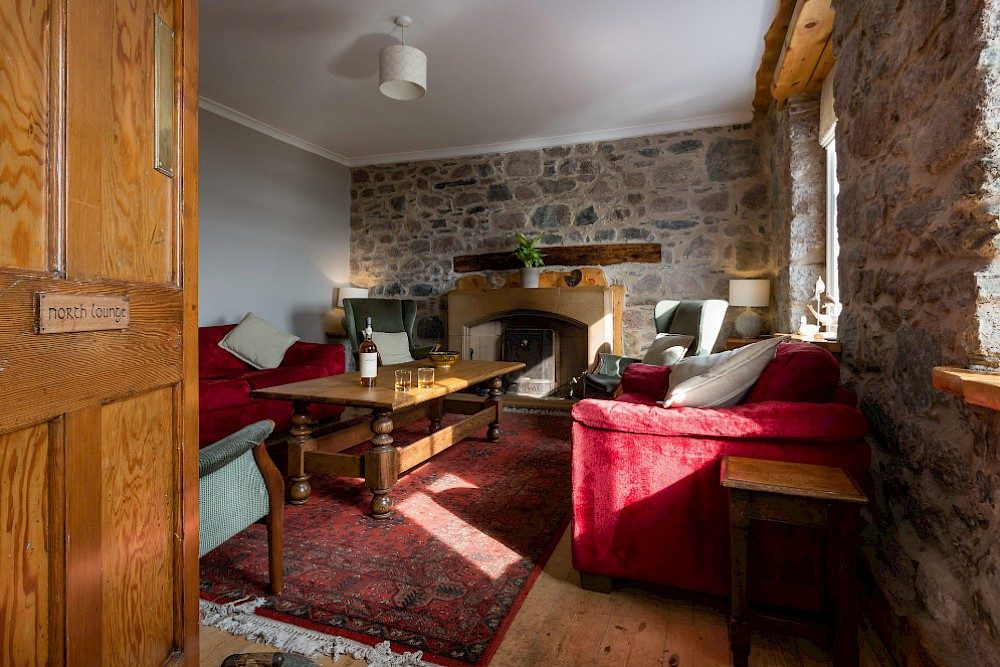
The building dates from the 1860s, so every room is a different shape and size. They are not the biggest, but they are cosy and comfortable. All are en-suite except Room 8, which has its own bathroom next door.
Choose from single rooms, sea view doubles, a luxury sea view double, twin and family rooms, and doubles looking over the garden. Sea view doubles are £239 to £265 a night, bed and breakfast.
The North Lounge has an open fire and walls of Mull granite, the South Lounge a piano and old beams. Wi-Fi is limited, and most guests are glad of it.
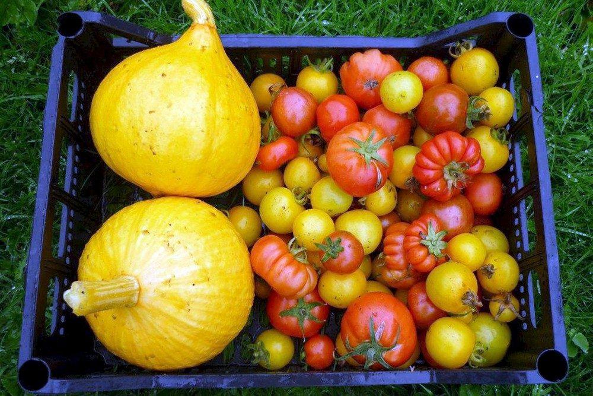
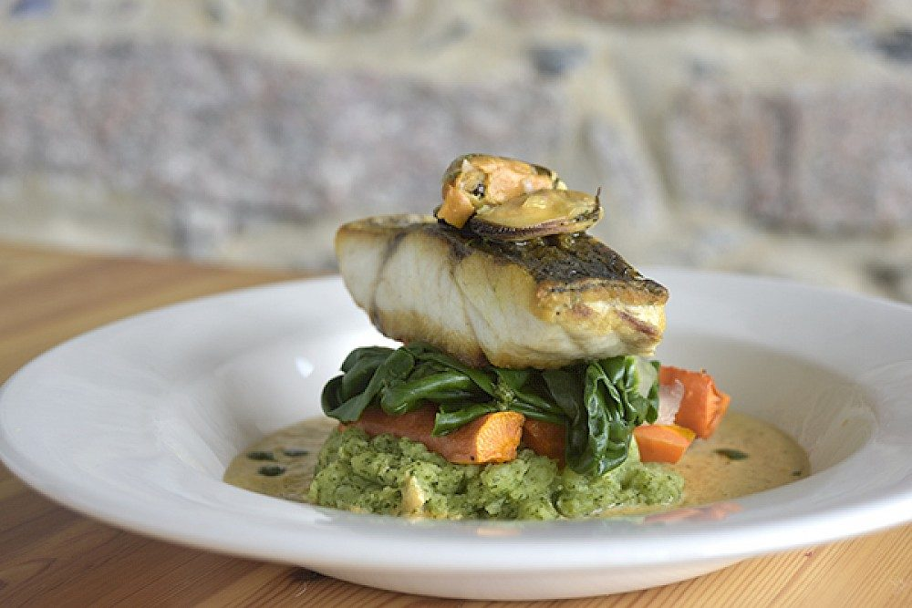
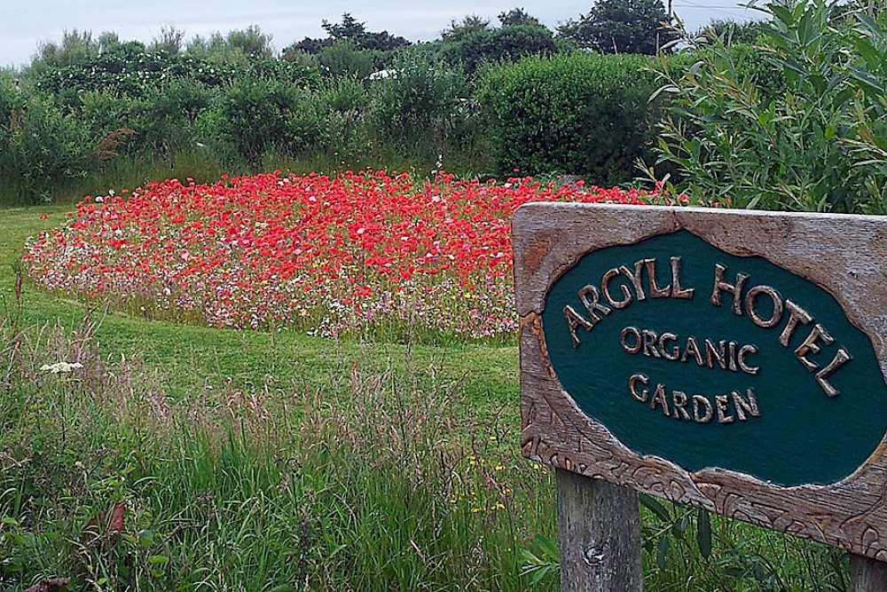
Our organic garden has fed the hotel for more than two hundred years. The basalt soil is fed the Hebridean way, with seaweed from the beach and our own compost. From May to October every plate carries at least one thing grown here.
Langoustines, crab and lobster come from a local boat working just off the island. Mussels come from Loch Spelve, smoked fish from Tobermory, cheese from the only dairy on Mull, and lamb and hogget from crofters on Mull and Iona. Bread, pastries and cakes are baked here with organic ingredients.
Coffee and home baking from 10am, lunch 12 to 2, afternoon tea 3 to 4.30, dinner 6 to 8. Please book for dinner.
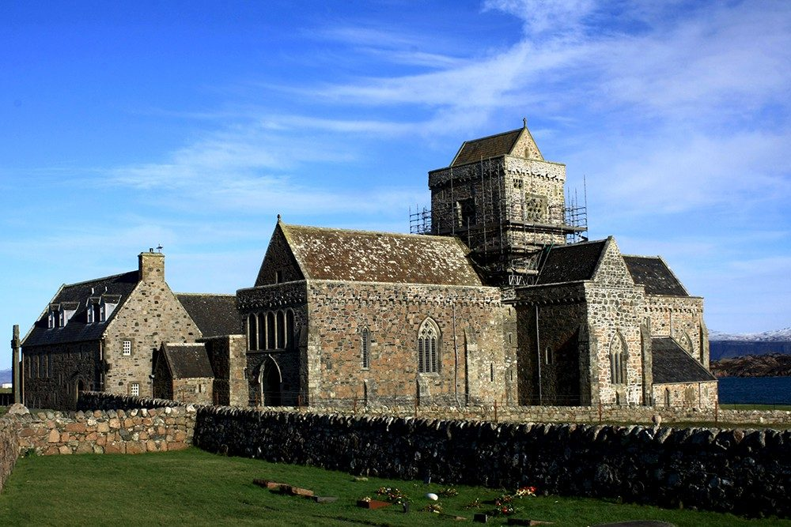
A short walkThe heart of 1,500 years of pilgrimage, and still a living community.
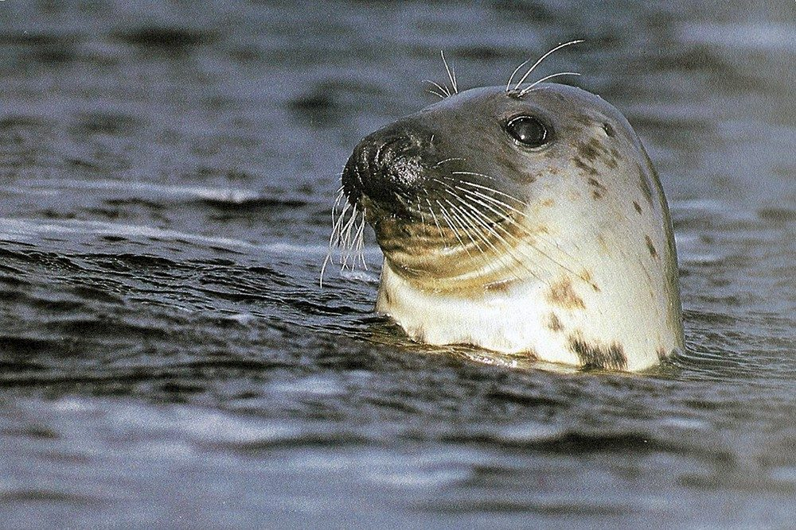
All aroundOtters, gannets, dolphins in the bay, and the rasping call of the corncrake in summer.
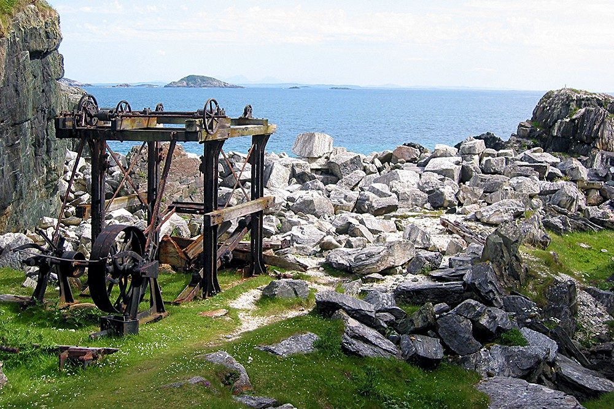
South-east coastA walk to the old workings where green Iona marble was cut.
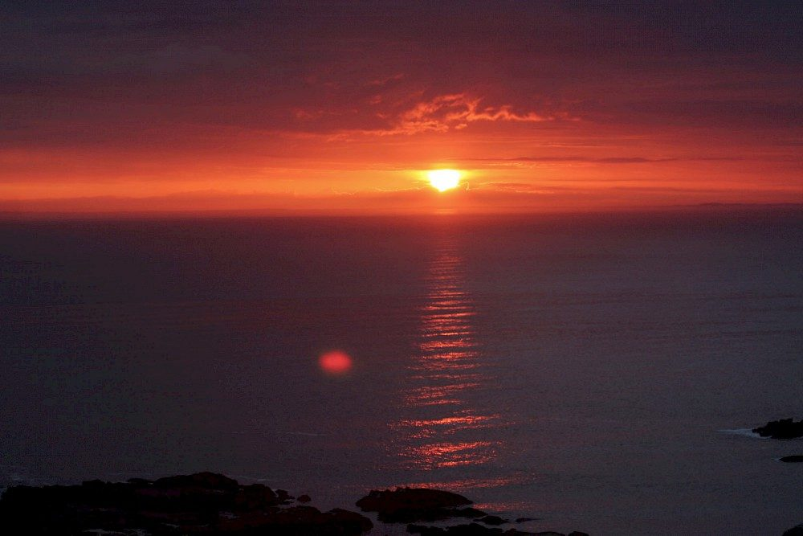
West sideAn 18-hole links course on the common grazing. Borrow clubs from the hotel for a donation to charity.
Each year the hotel also hosts small retreats and courses, from creative writing to island stories. Ask us what is coming up.
Choose your day of arrival and work backwards. From Glasgow, allow about seven hours.
About three hours by train or bus.
CalMac ferry to Craignure, 45 minutes. The last connecting ferry leaves Oban around 4pm.
Allow an hour and a quarter by bus or car to Fionnphort. Cars stay in the free car park there.
The ferry from Fionnphort takes 15 minutes. The last one waits for the connecting bus.
Book your car on the Oban ferry as soon as you have booked your room. If you are coming for a short stay, a night in Oban lets you reach Iona early the next morning.